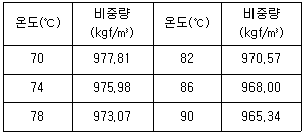
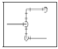
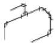
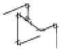
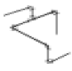
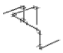
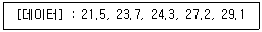

에너지관리기능장 (2005-07-17 기출문제)
1과목: 임의 구분
1. 어떤 보일러의 급수량이 2,000ℓ/h, 관수 중의 허용 고형분이 1,100 ppm, 급수 중의 고형분이 200 ppm 일 때 분출율은?
- 2.2 %
- 22.2 %
- 5.5 %
- 55 %
(정답률: 81%)

2. 다음 중 바이패스(by-pass) 배관을 필요로 하지 않는 것은?
- 온도조절 밸브
- 솔레노이드 밸브
- 감압 밸브
- 증기트랩
(정답률: 88%)
3. 정적비열(CV)과 정압비열(CP)의 관계를 옳게 나타낸 것은?
- CP＜ CV
- CP = CV
- CP ＞CV
- CP ≤ CV
(정답률: 84%)
4. 최상층 방열기로 공급되는 온수의 온도가 90 ℃ 이고, 온도강하가 16 ℃ 일 때 자연순환수두는? (단, 보일러 중심에서 최상층 방열기의 중심까지 수직높이는 15 m 이고, 배관도중의 열손실은 무시한다.)

- 104.6 mmAq
- 124.6 mmAq
- 159.6 mmAq
- 249.4 mmAq
(정답률: 44%)
5. 유체에 대한 베르누이 정리에서 유체가 가지는 에너지와 관계가 없는 것은?
- 압력에너지
- 속도에너지
- 위치에너지
- 질량에너지
(정답률: 83%)
6. 열역학 제 2법칙을 옳게 설명한 것은?
- 열은 그 자체만으로는 저온 물체로부터 고온 물체로 이동할 수 없다.
- 어떤 계내에서 물체의 상태변화 없이 절대온도 0 도에 이르게 할 수 없다.
- 열을 전부 일로 바꿀 수 있고, 일은 열로 전부 변화시킬 수 없다.
- 에너지는 소멸하지 않고 형태만 바뀐다.
(정답률: 70%)
7. 탄소 12 kg 을 완전 연소시키기 위하여 필요한 산소량은?
- 16 kg
- 24 kg
- 32 kg
- 36 kg
(정답률: 87%)
8. 증기의 건도를 향상시키는 방법으로 틀린 것은?
- 증기주관 내의 드레인을 제거한다.
- 기수분리기를 사용하여 수분을 제거한다.
- 고압증기를 저압으로 감압시킨다.
- 과열저감기를 사용하여 건도를 향상시킨다.
(정답률: 69%)
9. 증기보일러의 압력계 부착에 대한 설명 중 틀린 것은?
- 증기가 직접 압력계에 들어가지 않도록 안지름 6.5 mm 이상의 사이폰관을 설치한다.
- 압력계와 연결된 증기관이 강관일 때 그 안지름은 12.7 mm 이상이어야 한다.
- 증기온도가 483 K (210 ℃)를 초과할 때 압력계와 연결되는 증기관은 황동관 또는 동관으로 할 수 없다.
- 압력계와 연결되는 증기관은 상용압력의 1.5 배 이상의 압력에 견디는 것으로 한다.
(정답률: 56%)
10. 보일러의 분출시 주의사항으로 잘못 설명된 것은?
- 연속 사용 중인 보일러에서는 부하가 가벼운 시기를 택하여 행하는 것이 좋다.
- 2대 이상의 보일러를 동시에 분출하지 않아야 한다.
- 분출 도중 다른 작업을 하지 않아야 한다.
- 수저분출은 연속 분출이므로 가능한 안전저수위이하까지 충분히 분출한다.
(정답률: 86%)
11. 어떤 증기 보일러의 전열면적이 40 m2 이다. 안전밸브는 몇 개 이상 부착하면 되는가?
- 1개
- 2개
- 3개
- 4개
(정답률: 72%)
12. 증기트랩이 갖추어야 할 필요 조건이 아닌 것은?
- 동작이 확실할 것
- 마찰저항이 클 것
- 내구성이 있을 것
- 공기를 뺄 수 있을 것
(정답률: 90%)
13. 에너지이용합리화법에 의하여 에너지 총조사는 몇 년을 주기로 실시하는가?
- 1년
- 2년
- 3년
- 5년
(정답률: 52%)
14. 피드백 제어(feedback control)에서 기본 4대 제어장치에 해당되지 않는 것은?
- 조작부
- 조절부
- 설정부
- 검출부
(정답률: 79%)
15. 유체의 층류흐름과 난류흐름의 구분에 사용되는 수는?
- 푸르드수
- 레이놀드수
- 아보가드르수
- 웨버수
(정답률: 92%)
16. 태양열 보일러가 80 W/m2의 비율로 열을 흡수한다. 열효율이 75 % 인 장치로 10 kW 의 동력을 얻으려면 전열면적은 몇 m2 가 되어야 하는가?
- 166.7 m2
- 216.7 m2
- 52.8 m2
- 149.1 m2
(정답률: 57%)
17. 기체연료(gas)의 특징 설명으로 잘못된 것은?
- 누설시 화재 폭발의 위험이 없다.
- 고부하 연소가 가능하다.
- 다른 연료에 비해 매연 발생이 적다.
- 적은 과잉공기비로 완전연소가 가능하다.
(정답률: 91%)
18. 보일러 밀폐 건조 보존시 보일러 내부에 넣어두는 건조제의 종류가 아닌 것은?
- 생석회
- 실리카겔
- 활성 알루미나
- 황산나트륨
(정답률: 65%)
19. 보일러의 부하가 너무 클 때의 영향에 대한 설명으로 잘못된 것은?
- 프라이밍을 일으키기 쉽다.
- 보일러 효율이 저하된다.
- 국부과열이 일어날 우려가 있다.
- 매연이 생기기 쉽다.
(정답률: 67%)
20. 온수귀한방식 중 역귀환 방식에 관한 설명으로 옳은 것은?
- 배관길이를 짧게 하여 온수공급거리에 따라 보일러에서 가까운 곳과 먼 곳의 방열기 온도차를 줄이는 방식이다.
- 방열기를 통과한 귀환온수가 순차적으로 보일러에 귀환하여 까운 곳과 먼 곳의 방열기 온도차를 줄이는 방식이다.
- 각 방열기에 공급되는 유량분배에 차등을 두어 가까운 곳과 먼 곳의 방열기 온도차를 줄이는 방식이다.
- 각 방열기에 공급되는 유량분배를 균등하게 하여 가까운 곳과 먼 곳의 방열기 온도차를 줄이는 방식이다.
(정답률: 87%)
2과목: 임의 구분
21. 아크 용접기의 용량은 무엇으로 정하는가?
- 개로 전압
- 정격 2차 전류
- 정격 사용률
- 최고 2차 무부하 전압
(정답률: 84%)
22. 보일러의 노통이나 화실과 같은 원통이 외측에서의 압력에 의해 함몰되는 현상은?
- 팽출
- 브리스터
- 그루빙
- 압궤
(정답률: 92%)
23. 강제순환 수관보일러에 있어서 순환비란?
- 순환 수량과 포화수의 비율
- 포화 증기량과 포화 수량의 비율
- 발생 증기량과 순환 수량과의 비율
- 과열 증기량과 포화 수량의 비율
(정답률: 83%)
24. 다음 유량계 중 용적식 유량계에 속하는 것은?
- 벤츄리 유량계
- 오리피스 유량계
- 플로우노즐 유량계
- 오벌 기어식 유량계
(정답률: 70%)
25. 두께 150 mm 인 콘크리트에 두께 5 mm 의 석고판을 부착한 면적 15 m2의 벽체가 있다. 외기온도가 -5 ℃, 실내온도가 20 ℃ 라면, 이 벽체로 부터의 손실열량은? (단, 실내외측 표면의 열전달율은 각 7.2 kcal/m2·h·℃와 20 kcal/m2·h·℃이며, 재료의 열전도도는 콘크리트 1.4 kcal/m·h·℃, 석고판 0.18 kcal/m·h·℃ 이다.)
- 884 kcal/h
- 1,158 kcal/h
- 1,780 kcal/h
- 2,556 kcal/h
(정답률: 57%)
26. 배관 설비제도 도면에서 "EL-300TOP"로 표시된 것의 설명으로 옳은 것은?
- 파이프 윗면이 기준면보다 300 mm 높게 있다.
- 파이프 윗면이 기준면보다 300 mm 낮게 있다.
- 파이프 밑면이 기준면보다 300 mm 높게 있다.
- 파이프 밑면이 기준면보다 300 mm 낮게 있다.
(정답률: 81%)
27. 배관의 이동 및 회전을 방지하기 위해 지지점 위에 완전히 고정하는 금속으로 열팽창 신축에 의한 진동이 다른 부분에 영향이 미치지 않도록 배관을 분리하여 설치, 고정하는 리스트레인트(restraint)의 종류는?
- 앵커(anchor)
- 스톱(stop)
- 가이드(guide)
- 브레이스(brace)
(정답률: 67%)
28. 보일러 청관제의 역할과 관계가 없는 것은?
- 관수 연화
- 슬러지 조정
- 가성취화 방지
- 스케일 제거
(정답률: 82%)
29. 다음 보온재 중 가장 높은 온도에서 사용할 수 있는 것은?
- 시래믹 파이버
- 양모
- 암면
- 탄산 마그네슘
(정답률: 81%)
30. 보일러의 연소실 내부에서 전열면으로 열이 전달되는 형태 중 가장 크게 작용하는 열전달 방식은?
- 전도
- 대류
- 복사
- 비등
(정답률: 92%)
31. 용적 30ℓ 의 산소 용기 고압력계에 80 kg/cm2이 나타났다면 1시간에 300ℓ 소요되는 팁으로 몇 시간 용접할 수 있는가?
- 6시간
- 8시간
- 12시간
- 14시간
(정답률: 74%)
32. 2유체 버너라고도 하며, 유류 버너 중 유량의 조절범위가 가장 큰 것은?
- 고압기류식 버너
- 건타입 버너
- 유압식 버너
- 회전식 버너
(정답률: 91%)
33. 이온교환수지의 재생제로 사용되는 것은?
- CaCO3
- H3PO4
- N2H4
- NaCl
(정답률: 67%)
34. 실제 증발량 4 ton/h 인 보일러의 효율이 85% 이고, 급수온도가 40℃, 발생증기 엔탈피가 650 kcal/kg 이다. 이 보일러의 연료소비량은? (단, 연료의 저위발열량은 9,800 kcal/kg 이다.)
- 360 kg/h
- 293 kg/h
- 250 kg/h
- 390 kg/h
(정답률: 59%)
35. 신설 보일러에서 알카리 세정과 소다 끓임을 하기 전의 처리방법으로, 물이나 히드라진 100 ppm 정도를 첨가한 세정수로 펌핑하는 것은?
- 플러싱
- 크린싱
- 페이스팅
- 탄닝처리
(정답률: 90%)
36. 보일러 기초가 받는 하중을 계산할 때 고압이 작용하는 과열기의 하중은?
- 과열기 자체의 중량
- 과열기에 들어가는 증기의 중량
- 과열기 자체의 중량에 증기의 중량을 합한 것
- 과열기 자체의 중량에 만수시의 수량을 합한 것
(정답률: 80%)
37. 이온교환처리 장치에서 이온교환 수지의 재생을 위한 운전 공정을 순서대로 나열한 것은?
- 역세 - 재생 - 압출 - 수세 - 통수
- 재생 - 역세 - 통수 - 압출 - 수세
- 역세 - 통수 - 재생 - 압출 - 수세
- 통수 - 재생 - 수세 - 압출 - 역세
(정답률: 80%)
38. 집진장치인 백필터의 사용시 고려해야 할 사항과 가장 관련이 없는 것은?
- 연소온도
- 가스 노점온도
- 함진 농도
- 압력 손실
(정답률: 64%)
39. 보일러 설치·시공 기준에 따라 보일러를 옥내에 설치하는 경우의 설명으로 잘못된 것은? (단, 소형보일러가 아닌 경우임)
- 보일러를 불연성 물질의 격벽으로 구분된 장소에 설치해야 한다.
- 도시가스를 사용하는 경우는 환기구를 가능한 한 높이 설치한다.
- 보일러에 설치된 계기들을 육안으로 관찰하는데 지장이 없도록 충분한 조명시설이 있어야 한다.
- 연료를 보일러실에 저장할 때는 보일러와 1 m 이상의 거리를 두어야 한다.
(정답률: 80%)
40. 스트레이너의 종류 중 유체의 흐름 방향에 대하여 직각으로 방향이 바뀌므로 유체 흐름에 대한 저항이 크지만, 보수, 점검이 용이하여 오일 스트레이너로 주로 사용되는 것은?
- Y형 스트레이너
- V형 스트레이너
- U형 스트레이너
- H형 스트레이너
(정답률: 78%)
3과목: 임의 구분
41. 동관의 특징 설명으로 잘못된 것은?
- 마찰저항 손실이 적다.
- 가공성이 매우 좋다.
- 내식성 및 열전도율이 작다.
- 무게가 가벼우며, 위생적이다.
(정답률: 87%)
42. 연소가스의 여열을 이용하여 급수를 가열하는 장치는?
- 과열기
- 재열기
- 응축기
- 절탄기
(정답률: 78%)
43. 보일러에서 고온 부식을 일으키는 연료 중의 성분은?
- 황
- 탄산가스
- 바나듐
- 일산화탄소
(정답률: 84%)
44. 아래에 주어진 평면도를 등각투상도로 나타낼 때 맞는 것은?





(정답률: 90%)
45. 보온재의 구비 조건으로 잘못 설명된 것은?
- 열전도율이 가능한 적을 것
- 시공 및 취급이 간편할 것
- 흡수성이 적을 것
- 비중이 클 것
(정답률: 88%)
46. 배관의 호칭법에서 강관의 스케줄 번호가 나타내는 것은?
- 관의 안지름
- 관의 길이
- 관의 바깥지름
- 관의 두께
(정답률: 90%)
47. 어떤 보일러의 상당증발량이 1,800 kg/h 일 때 이 보일러의 보일러 마력(HP)은?
- 95 HP
- 154 HP
- 137 HP
- 115 HP
(정답률: 52%)
48. 수관식 보일러의 연소실 벽면에 설치하는 수냉노벽의 설치 목적과 관계 없는 것은?
- 물의 순환을 좋게 하며 수관의 변형을 방지한다.
- 전열면적의 증가로 증발량이 많아진다.
- 연소실내의 복사열을 흡수한다.
- 연소실 노벽을 보호한다.
(정답률: 48%)
49. 보일러수에 함유된 성분 중 고온에서 석출되는 것으로, 주로 증발관에서 스케일화 되기 쉬우며, 내처리제를 사용하여 침전시켜 제거하는 것은?
- 염화마그네슘
- 황산칼슘
- 중탄산 마그네슘
- 실리커
(정답률: 41%)
50. 다음 보일러 중 안전밸브를 반드시 밀폐식으로 설치해야 하는 것은?
- 라몬트 보일러
- 벤숀 보일러
- 노통연관 보일러
- 다우섬 보일러
(정답률: 57%)
51. 다음 중 무기질 보온재에 해당되는 것은?
- 탄화콜크
- 양모
- 우모
- 석면
(정답률: 81%)
52. 검사대상기기 설치자는 검사대상기기의 안전관리 및 위해 방지를 위하여 검사대상기기 조종자를 채용하여야 한다. 이를 위반하였을 경우 벌칙은?
- 2년 이하의 징역 또는 2천만원 이하의 벌금
- 1년 이하의 징역 또는 1천만원 이하의 벌금
- 1천만원 이하의 벌금
- 5백만원 이하의 벌금
(정답률: 67%)
53. 보일러 연료의 연소 형태 중 버너연소가 아닌 것은?
- 기름연소
- 수분식연소
- 가스연소
- 미분탄연소
(정답률: 90%)
54. 증기 선도에서 임계점이란?
- 고체, 액체, 기체가 불평형을 유지하는 점이다.
- 증발열이 어느 압력에 달하면 0 이 되는 점이다.
- 증기와 액체가 평형으로 존재할 수 없는 상태의 점이다.
- 건포화증기를 계속 가열하면 압력 변동 없이 온도만 상승하는 점이다.
(정답률: 85%)
55. 다음 데이터로부터 통계량을 계산한 것 중 틀린 것은?

- 중앙값(Me) = 24.3
- 제곱합(S) = 7.59
- 시료분산(s2) = 8.988
- 범위(R) = 7.6
(정답률: 71%)
56. 다음 중에서 작업자에 대한 심리적 영향을 가장 많이 주는 작업측정의 기법은?
- PTS법
- 워크 샘플링법
- WF법
- 스톱 워치법
(정답률: 69%)
57. 다음 중 계량치 관리도는 어느 것인가?
- R 관리도
- nP 관리도
- C 관리도
- U 관리도
(정답률: 68%)
58. 생산보전(PM:Productive Maintenance)의 내용에 속하지 않는 것은?
- 사후보전
- 안전보전
- 예방보전
- 개량보전
(정답률: 82%)
59. 여력을 나타내는 식으로 가장 올바른 것은?
- 여력 = 1일 실동시간 × 1개월 실동시간 × 가동대수
- 여력 = (능력 - 부하) ×

- 여력 =

- 여력 =

(정답률: 82%)
60. 다음 중 로트별 검사에 대한 AQL 지표형 샘플링검사 방식은 어느 것인가?
- KS A ISO 2859-0
- KS A ISO 2859-1
- KS A ISO 2859-2
- KS A ISO 2859-3
(정답률: 61%)
따라서, (200 - 1,100) / 200 x 100 = -450 / 2 = -225 입니다.
하지만 분출율은 항상 양수이므로, -225를 양수로 바꾸어 줍니다. 따라서, 분출율은 225 / 2 = 112.5 입니다.
마지막으로, 분출율을 백분율로 나타내면 112.5 x 100 / 500 = 22.2 % 가 됩니다.
따라서, 정답은 "22.2 %" 입니다.